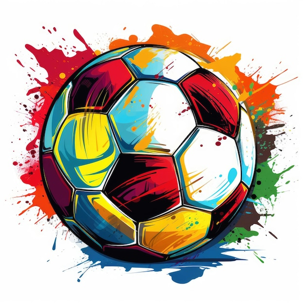

I grew up loving art and It was what I was good at! As time went on I grew to love it and thus made it my first ever hobbie I learnt and to this day I am still getting better and better and better and now I want to be and architect
As from six I went to England and fell in love with football and It became my second hobbie making me fit and fast making me very agile. This led to me being a great player but even though I am agile I am a defender(right back) but here and then I still run up with the ball to deliver a cross
Coding came into this list but because I aspire to be a footballer and architect I might use it less but no I enjoy coding through Codingal anf thats all I have to say as you know just from what I do in class I am a pretty good coder
Ever since I was young I always loved an adventure and going outside. With the help of my bravery I am very good at being the one who leads the line and the one who is there to make notes of all th COOL thing you see